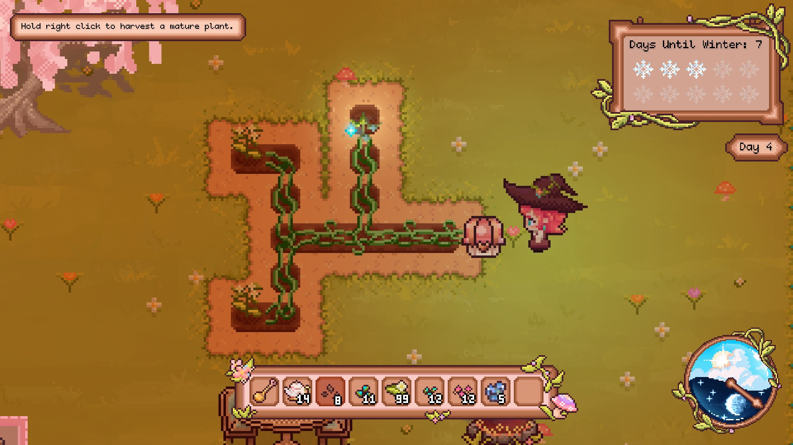
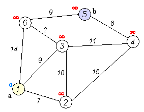
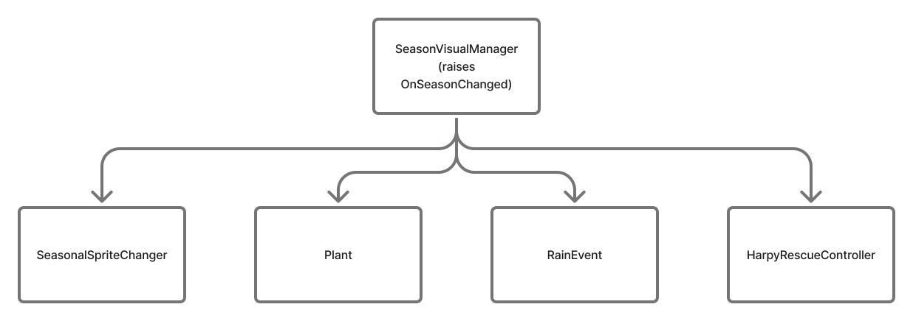
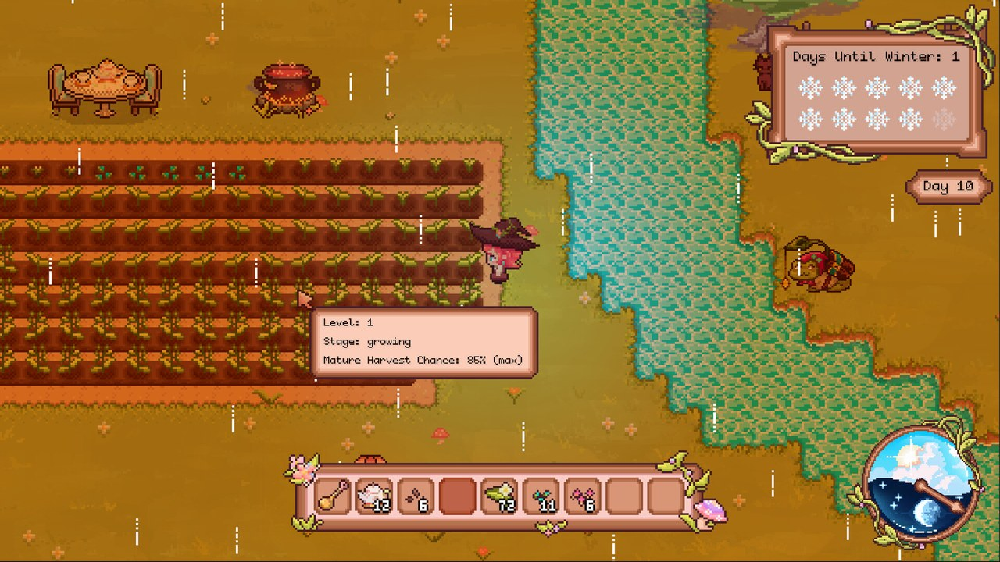
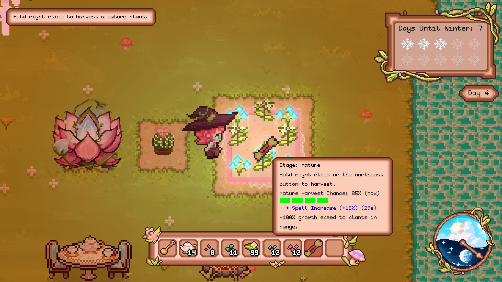
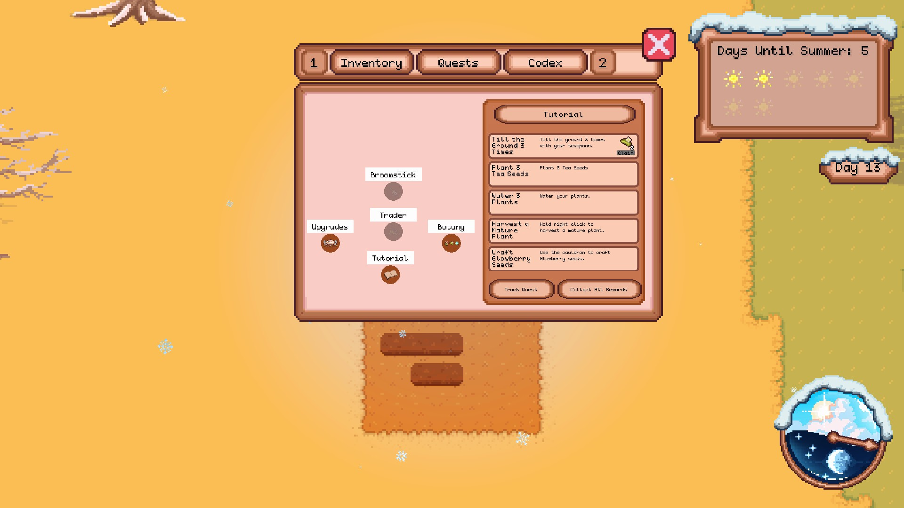
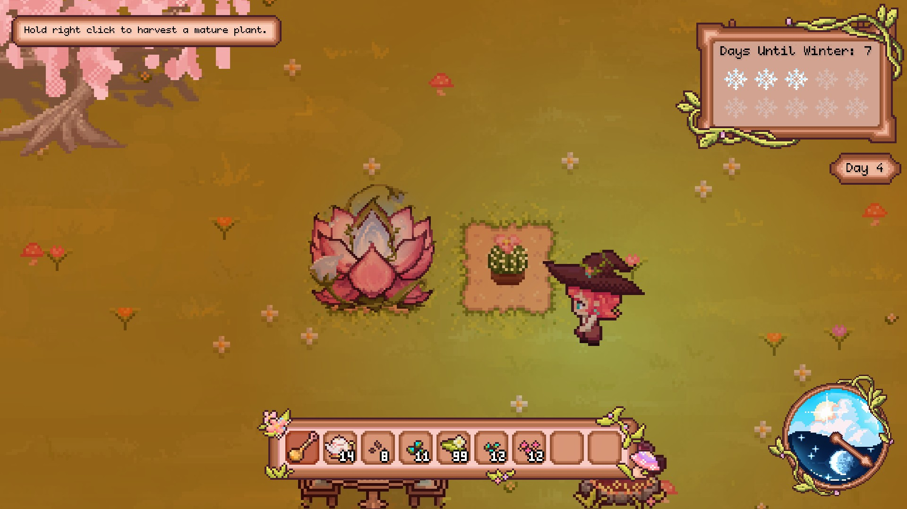
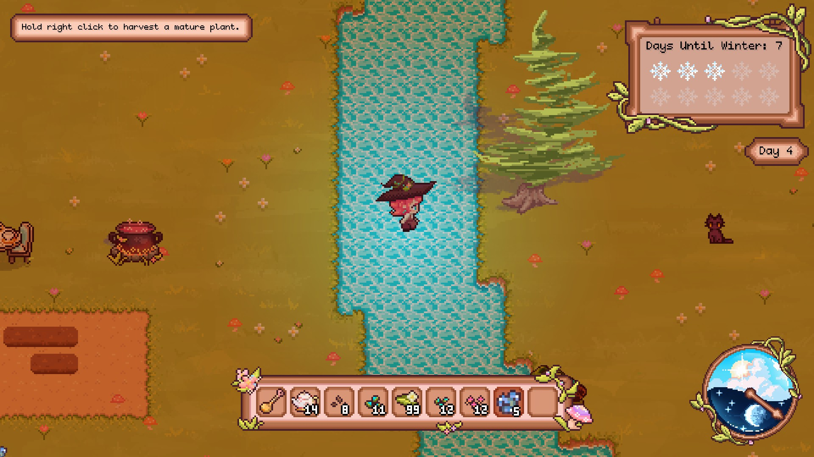
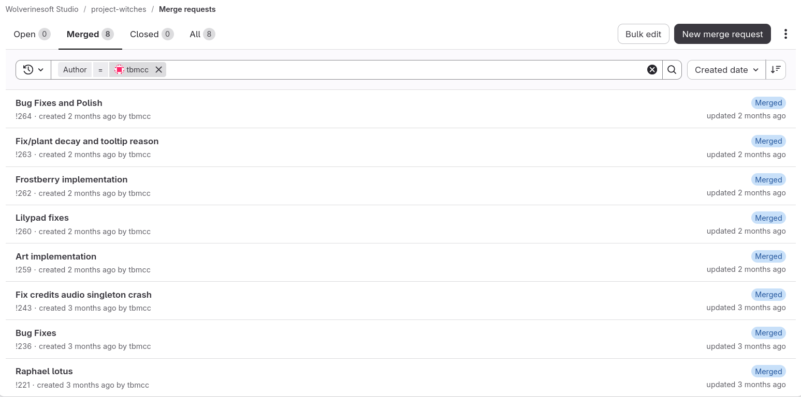

Mystic Garden is a WolverineSoft game made in the Unity game engine. The premise is growing magical plants on a tile-based farm. Plants need water, react to the weather and seasons, and interact with each other through status effects. I worked on it as a programmer from October 2025 through August 2026, alongside a team of other programmers, artists, and designers.
Most of my work was on the plants themselves: the Flowvine item network, hydration and harvest chance, plant spells, the season system, quest saving, and two late-game plants, the Raphael Lotus and the Frostberry. The sections below go through those systems and the decisions behind them.
My first task was a "pipe plant": a vine the player grows tile by tile that picks up items and
carries them to storage containers, like a conveyor in a factory game. I divided this logic into
three systems: a pipe manager, a pipe system, and a pipe segment. They were later renamed to
FlowvineManager, FlowvineSystem,
and FlowvineSegment to fit the game's theme.
I kept the manager small on purpose. Segments use it to find their neighbors by position, and systems register themselves in it when they are built:
public class FlowvineManager : Singleton<FlowvineManager>
{
public Dictionary<Vector2Int, FlowvineSegment> flowvines = new();
public List<FlowvineSystem> systems = new();
}Each segment is a component on the plant. I assigned each segment four connection flags that indicate whether that side is connected to another vine, pulling items in, pushing items out, or not connected at all. Segments also have a mode that marks them as an input, an output, or a plain transfer piece:
public enum FlowvineConnection { OtherFlowvine, Pull, Push, None }
public enum FlowvineMode { Transfer, Output, Input }
public class FlowvineSegment : MonoBehaviour, IMouseInteractable
{
private FlowvineConnection upConnection = FlowvineConnection.None;
// ...down, left, and right connections
public List<FlowvineSegment> neighborsList = new();
public FlowvineMode mode = FlowvineMode.Transfer;
public FlowvineSystem system;
}A system is built from any one segment with a breadth-first search, which collects everything that segment is connected to and records the inputs and outputs it finds:
public FlowvineSystem(FlowvineSegment root)
{
List<FlowvineSegment> queue = new() { root };
AddSegment(root);
while (queue.Count > 0)
{
FlowvineSegment current = queue[0];
queue.RemoveAt(0);
foreach (FlowvineSegment neighbor in current.neighborsList)
{
if (neighbor == null || !neighbor.ActiveInNetwork)
continue;
// ...skip neighbors on a side that isn't connected
if (!neighbor.BFSExplored)
{
queue.Add(neighbor);
AddSegment(neighbor);
}
}
TrackEndpoint(current); // Records inputs and outputs.
}
FlowvineManager.Instance.systems.Add(this);
}The three connect when a vine changes. Placing, removing, or reconfiguring a segment flags it and its neighbors for an update, and on its next frame the segment throws away its old system and builds a new one from itself. Adding a segment to the new system disables whatever system it belonged to before, so two systems never own the same vine.
void UpdateSystem()
{
system?.DisableSystem();
// ...also disable any connected neighbor's system
system = new FlowvineSystem(this);
}Splitting it up this way kept each piece small. Segments only deal with their neighbors, systems only with their own vines, and the manager is just a shared lookup. It also kept the expensive work local: moving an item only searches its own system, and cutting a vine only rebuilds the network it touched instead of every vine on the map.

The four connection flags also decide how the vine looks. I pack them into a 4-bit mask and map each of the 16 values to a sprite, so straight pieces, corners, T-junctions, and crossings all come from one lookup instead of a chain of conditions.
int bitmask = (upConnection != FlowvineConnection.None ? 1 : 0)
| (downConnection != FlowvineConnection.None ? 2 : 0)
| (leftConnection != FlowvineConnection.None ? 4 : 0)
| (rightConnection != FlowvineConnection.None ? 8 : 0);
return bitmask switch
{
3 => upDown,
12 => leftRight,
15 => fourWay,
// ...corner, T-junction, and end-piece cases
_ => none,
};Because every shape is just a case in that switch, supporting a new piece of vine art only means adding one line.
Once networks could branch, an item needed to know which output to go to. Each segment moves an item after a delay that comes from the plant's own action delay (which is based on the plant's upgrade level), so different routes take different amounts of time. I had just learned Dijkstra's algorithm in EECS 281 and thought it was a good fit, so I implemented it myself for the system: it treats the network as a weighted graph, finds the fastest route from the input to each output, and picks the fastest of those. Networks are small, so a simple linear scan for the closest unsettled segment was fast enough and easier to read than a priority queue.
To give a brief overview: Dijkstra's algorithm finds the shortest path from a starting node in a graph with non-negative edge weights. Each step settles the closest unsettled node, then updates its neighbors if going through it gives them a shorter distance. Once the target is settled, following each node's previous node back gives the path.

In Mystic Garden, the nodes are vine segments, the edge weights are each segment's transfer time, and the distance is how long an item takes to arrive. My implementation follows the same steps:
while (unsettled.Count > 0)
{
FlowvineSegment current = ClosestUnsettledSegment(unsettled, traversalTimes);
unsettled.Remove(current);
if (current == outputFlowvine)
{
// ...record the total transfer time
path = ReconstructPath(inputFlowvine, outputFlowvine, previousSegments);
return path != null;
}
foreach (FlowvineSegment neighbor in current.neighborsList)
{
// ...skip missing or unconnected neighbors
float newTime = traversalTimes[current] + current.GetTransferRate();
// Only update if this is a faster route
if (!traversalTimes.ContainsKey(neighbor) || newTime < traversalTimes[neighbor])
{
traversalTimes[neighbor] = newTime;
previousSegments[neighbor] = current;
if (!unsettled.Contains(neighbor))
unsettled.Add(neighbor);
}
}
}Items in transit were the main source of bugs. If the player cut a vine while an item was moving, the item could disappear. The transfer now runs as a coroutine that checks every frame whether its system is still enabled. If not, it drops the item back where it started. If the destination inventory is full or missing, the item drops at the output instead.
while (elapsed < transferTime)
{
if (!systemEnabled)
{
ItemEntityManager.Spawn(item, respawnPos); // System broke mid-transfer
yield break;
}
elapsed += Time.deltaTime;
yield return null;
}
if (targetInventory == null || !targetInventory.InsertItem(item /* ... */).inserted)
ItemEntityManager.Spawn(item, outputPos);Either way, the player never loses an item to the network. With branching networks, though, it isn't obvious where an item will end up. As a finishing touch to this task, I reused the same route search logic to build an overlay that shows the player where items are flowing when they hover over a flowvine system.
Hovering over a matured segment highlights every route that passes through it, so the player can see which output each input will feed before any items move.
The original season code stored a single isWinter flag. On
every change it searched the scene for each SeasonalSpriteChanger
and called it directly. A seasonal sprite changer is a small component placed on objects like trees:
it holds a summer sprite and a winter sprite, and swaps the object's sprite to match the season.
That tied the manager to every kind of seasonal object, and a flag couldn't grow past two
seasons. I refactored SeasonVisualManager to use a
Season enum with room for all four seasons, and to publish an
OnSeasonChanged event. Seasonal objects now subscribe when they start and unsubscribe
when disabled.

SeasonVisualManager raises one event, and every
seasonal system subscribes to it instead of being called directly.private void Start()
{
if (SeasonVisualManager.Instance != null)
{
SeasonVisualManager.Instance.OnSeasonChanged += OnSeasonChanged;
OnSeasonChanged(SeasonVisualManager.Instance.ActiveSeason);
}
}
private void OnDisable()
{
if (SeasonVisualManager.Instance != null)
SeasonVisualManager.Instance.OnSeasonChanged -= OnSeasonChanged;
}The handler also runs once with the current season right after subscribing. An object created in the middle of winter shows its winter sprite immediately instead of waiting for the next season change.
Seed drops originally didn't depend on how well a plant was cared for, so I tied seed refunds to a new harvest chance value rather than a random range.

Each plant starts at a maximum chance, which is lowered if the plant is dehydrated or exposed to the cold and raised by active spells. Larger seed drops scale by the chance, and single seeds become a roll. That way watering and planning pay off without the player ever being completely blocked.
private float GetHarvestChance()
{
float dehydrationPenalty = plantHydration.GetDehydrationPenalty();
float harvestChance = maxHarvestChance
- dehydrationPenalty
+ SpellEffectHandler.HarvestSpellBoost
- (hasStoredWarmthPenalty ? storedWarmthPenalty : GetWarmthPenalty());
return Mathf.Clamp(harvestChance, 0f, maxHarvestChance);
}
At first, hydration logic was mixed into Plant, which was
already one of the largest classes in the project, so I moved it into its own PlantHydration component. One design choice there was recovery
time. A plant that dips below its water threshold becomes dehydrated right away, but it must stay
watered for a set time before the penalty is removed. Without that delay, players could ignore their
plants and water them right before harvesting.
if (!IsHydrated(hydration))
{
dehydrated = true;
hydratedTime = 0f;
return wasDehydrated != dehydrated;
}
if (!dehydrated) return false;
hydratedTime += deltaTime;
if (hydratedTime >= dehydrationRecoveryTime)
{
dehydrated = false;
hydratedTime = 0f;
}Dipping below the threshold again resets the recovery timer, so the plant has to stay watered for the whole recovery period.
Spells are items the player casts on a plant for a temporary effect. I built a framework that lets
a spell apply a temporary status effect to a plant, along with the first spell, the "Spell of
Preservation," which raises a plant's harvest chance for a while. Instead of writing that case
directly into the plant, I made each spell a serializable PlantSpellEffect
with a duration that returns a list of stat modifiers. Designers set the values on the spell item in
the Inspector, and the item hands a copy to the plant when it is used.

I created an additional PlantSpellEffectHandler on each plant that tracks active
effects.
It applies modifiers when an effect starts and applies the same modifiers with the opposite sign when
it expires, so effects always reverse cleanly. Casting a spell that is already active just restarts
its timer, so players can't stack the same spell for a huge bonus.
public void ApplyNewEffect(PlantSpellEffect effect)
{
if (TryGetSpellOfType(effect.GetType(), out PlantSpellEffect foundEffect))
{
foundEffect.TimeActive = 0f; // Combine existing effects.
}
else
{
activeSpellEffects.Add(effect);
ApplyModifiers(effect, 1f);
}
}
private void RemoveEffect(PlantSpellEffect effect)
{
ApplyModifiers(effect, -1f);
activeSpellEffects.Remove(effect);
}
Adding a new spell only takes a new PlantSpellEffect subclass
that returns its modifiers. The Spell of Preservation is
HarvestChanceBonusEffect, which returns a single harvest chance
modifier (+15 by default).
Quests were originally a single linear list, and the save file stored only the current quest. When
the team added side quests and separate quest lines, I updated QuestManager and the world saver to support several active
sequences at once. The save now stores each active sequence's name, its current quest, and that
quest's progress, plus which sequence the player is tracking. Loading looks each sequence up by name
and restores it.

The save system itself came from WolverineSoft's shared library, which already handled writing player data to a file and restoring it later. I didn't build that part. My work was adapting the quest system so that nonlinear quest progress could be saved and loaded through it.
foreach (var sequence in questManager.GetActiveSequences())
{
var quest = sequence.GetCurrentQuest();
if (quest == null) continue; // sequence already fully completed
int progress = 0;
if (quest.completionCondition is CounterQuestCondition counter)
progress = counter.GetProgress();
result.Add(new QuestState
{
sequenceName = sequence.sequenceName,
questName = quest.name,
progress = progress,
dialoguePlayed = tutorialManager != null && tutorialManager.HasDialoguePlayed(quest)
});
}I saved quests by name instead of list position on purpose. Quests change often during development, and a save that stored positions would point old save files at the wrong quest as soon as the list was reordered.
The Raphael Lotus is the plant that ends the game, so growing it is meant to be a puzzle. It must be watered above 95%, be under the effect of a nearby Caxius plant, and get rain within a day of planting. If any condition fails, the lotus decays at its next growth stage instead of maturing.

The rules are checked in RaphaelInvalidator, but only when the
plant moves to a new growth phase rather than every frame. Checking every frame would let a brief
dip in water ruin the lotus before the player could react. Checking at phase changes matches how
players think about the plant: each stage is a checkpoint.
int currentPhase = plant.PhaseIndex;
if (currentPhase == lastCheckedPhase) return;
lastCheckedPhase = currentPhase;
if (currentPhase == 0) return; // Skip the first stage.
bool missingCaxius = !plant.StatusEffects().Any(c => c is CaxiusIncreaseEffect);
bool underwatered = plant.PercentWatered() < 0.95;
invalid = missingCaxius || underwatered;One bug came from Unity's update order. The lotus and its invalidator are separate components, and Unity doesn't guarantee which one updates first. On the frame the lotus matured, the invalidator could still report it as invalid and schedule a decay. I fixed it by checking maturity first in the lotus itself. Once it has matured, decay can no longer be triggered, whatever the other component reads.
if (!matured && plant.lifecycleStage == Plant.LifecycleStage.Matured)
{
matured = true;
OnMaturity();
}
if (!matured && invalidator.Invalid && !decayed)
{
decayed = true;
plant.ScheduleDecay(invalidator.InvalidReason);
}
Once it matures, the lotus pauses its growth, expands to take up the tiles around it, and publishes
a RaphaelLotusMaturedEvent for the rest of the game to react to.

The Frostberry lets the player walk on water for a while after eating one. It also freezes nearby water so lilypads can be placed there. Water tiles block movement through their tile colliders. Rather than turning collision off for the whole map, I clear the colliders only on water tiles in the 3×3 area around the player and remember each tile's original collider so it can be restored.
Vector2Int center = World.Round(transform.position);
HashSet<Vector2Int> needed = new();
for (int x = -1; x <= 1; x++)
{
for (int y = -1; y <= 1; y++)
{
Vector2Int position = center + new Vector2Int(x, y);
if (!GroundManager.IsBodyOfWater(position)) continue;
needed.Add(position);
if (modifiedWaterColliders.ContainsKey(position)) continue;
Tile.ColliderType original = World.Instance.GameplayTilemap.GetColliderType((Vector3Int)position);
modifiedWaterColliders.Add(position, original);
World.Instance.SetTileCollision(position, Tile.ColliderType.None);
}
}
// Tiles no longer near the player get their original collider back.The difficult case was the effect running out while the player was standing on water. If the colliders came back at that moment, the player would be stuck inside one. So the path stays open after the timer ends until the player steps back onto land, and only then are the colliders restored.
My commits run from October 2025 to August 2026. They start with the pipe system and its art. Next came the Flowvine rework and the season refactor, then hydration, spells, and quest saving. They end with the Raphael Lotus, the Frostberry, and lilypads for the final builds.

Many of these systems touch Plant, which several programmers were editing at the
same time, so I tried to put new behavior in separate components (hydration, spell handling,
invalidation) instead of growing that class. That kept merges smaller and made it clear where each
feature belonged.
Mystic Garden is developed in WolverineSoft's private studio repository, so source links aren't available. The excerpts above are trimmed from the code I wrote. You can find the game on Steam.